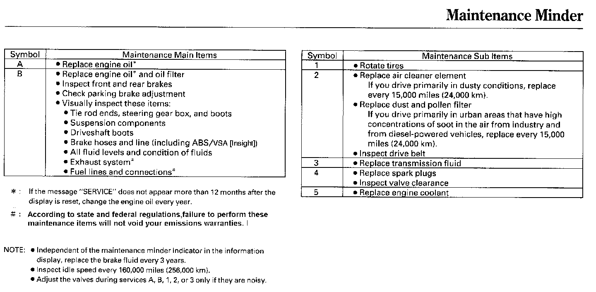

Indicator Based Service
Maintenance Minder
All the maintenance items displayed in the odometer/trip meter or the multi-information display are in code.

For explanation of codes and maintenance to be performed see the image above.
